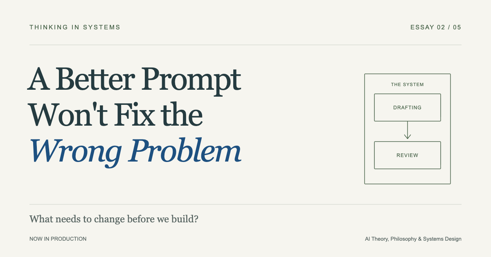
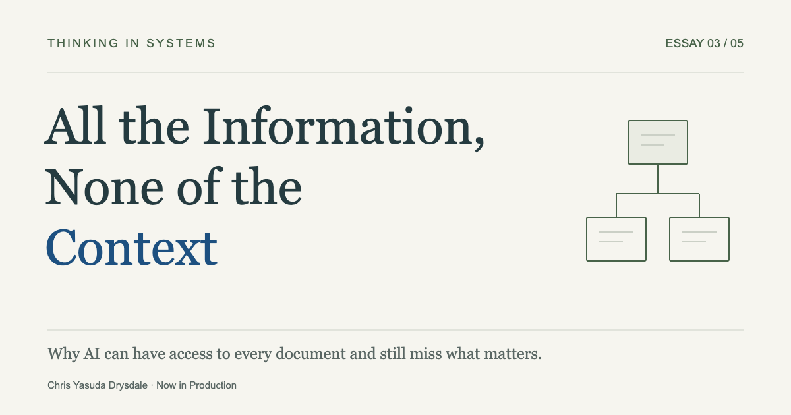
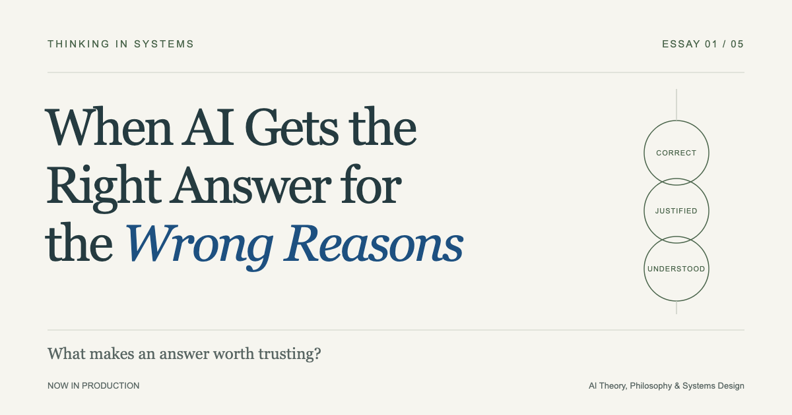
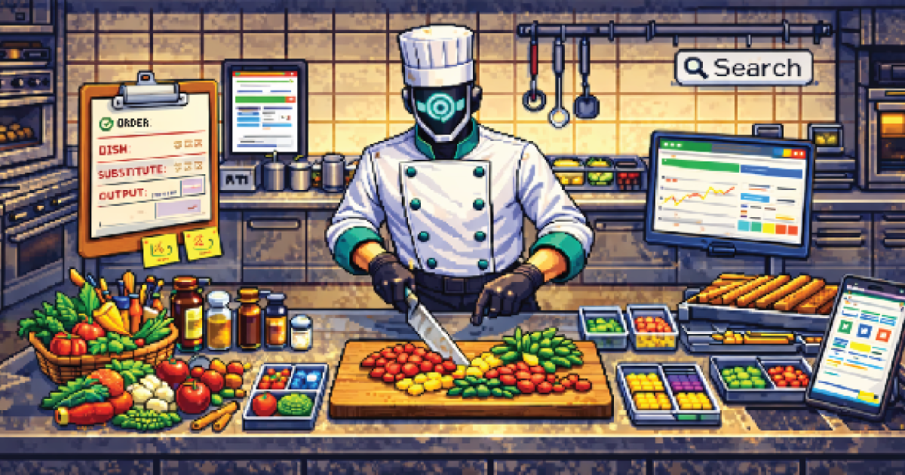
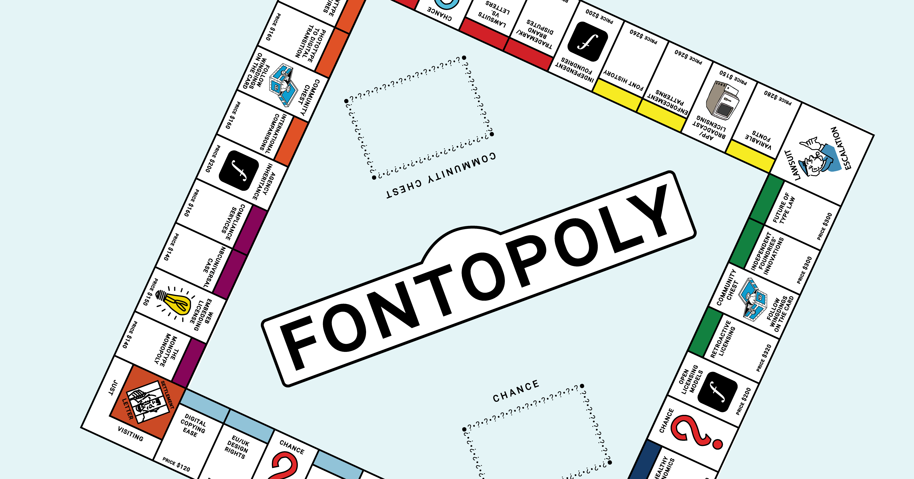

Guides
A Better Prompt Won't Fix the Wrong Problem
How problem framing, system boundaries, and the relationships between components shape what we should build with AI. Part 2 of Thinking in Systems.

All the Information, None of the Context
Why AI can have access to every document and still miss what matters.

When AI Gets the Right Answer for the Wrong Reasons
What 2,400 years of philosophy can teach us about knowledge, understanding, and building trustworthy AI systems. Part 1 of Thinking in Systems.

Demystifying AI: Stepping into the LLM Kitchen
A practical guide to how LLMs work—using a pixel kitchen/restaurant sim metaphor to teach prompt writing, context windows, tools, QA, and agent workflows.

Typography Inc.: Who Owns the Alphabet
The story of who owns fonts—from clay seals to computer screens. A visual, interactive guide to typography's ownership history, craft, and the rules that still shape the letters we see everyday.

From Pixels to Paper: An RGB → CMYK Adventure
Follow your colors from screen to print in a step-by-step guide explaining how RGB to CMYK color conversion works.